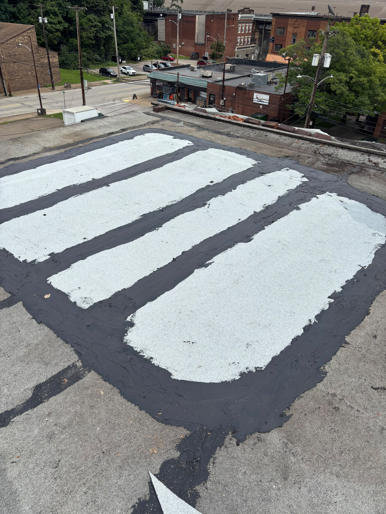

Shingles need slope to work. Below roughly a 2:12 pitch, water sits instead of running off, and shingles will leak there no matter how carefully they're installed. That's what a rolled membrane roof is for, and Pittsburgh has thousands of them: back additions, porch roofs, garages, and flat commercial decks.
We install modified bitumen in both torch-down and self-adhered systems, and we apply reflective coatings to existing flat roofs that are sound but tired. Which of those you need depends on the deck, not on what we'd rather sell.
What the job includes
What a rolled roof job covers:
- An honest tear-off or overlay call — some decks can carry another layer and some can't. We tell you which yours is before you commit.
- Deck repair and a clean substrate — a membrane laid over a soft deck is a wasted membrane and a wasted weekend.
- Base sheet and cap sheet — fully adhered or torched, with every lap rolled and sealed rather than pressed down by hand and hoped over.
- Perimeter and penetration detailing — drip edge, wall and parapet flashing, and boots around every vent and pipe.
- Drainage checked — a flat roof that ponds will fail early regardless of what's on it, so we look at where the water is meant to go.
- Reflective coating — where the goal is buying years out of a roof that isn't finished yet.
How the work runs
-
Check the pitch and the ponding
We look for standing water marks, soft spots underfoot, and where the deck has started to sag toward the middle.
-
Coat, overlay or replace
Three different jobs at three different prices. You get our reasoning, not just the number.
-
You get it in writing
System, number of layers, square footage, and how many days the deck will be exposed.
-
Prep the deck
Strip or clean, repair the substrate, and make sure everything is dry before any membrane goes down. Rolled roofing over trapped moisture blisters.
-
Install and detail the edges
The open field is the easy part. What decides whether a flat roof leaks is the perimeter and the penetrations, and that's where the time goes.
Recent roll roofing work


Questions we get asked
Can you just coat it instead of replacing it?
If the membrane underneath is intact and the deck is sound, a coating is a genuine option and much cheaper. If water is already in the substrate, a coating seals the problem in. We'll cut a test area to find out rather than guess.
How long does a rolled roof last here?
A properly installed modified bitumen roof generally runs fifteen to twenty years in this climate. Ponding water and neglected flashing are what cut that short, not the membrane itself.
Is torch work safe on my building?
Where it isn't appropriate, we don't use it. On wood decks with no separation, or tight to combustible siding, we install a self-adhered system instead. The result is the same roof without the open flame.
Free estimate, no pressure
We'll come out, look at the work, and give you a written number. What you do with it is up to you.